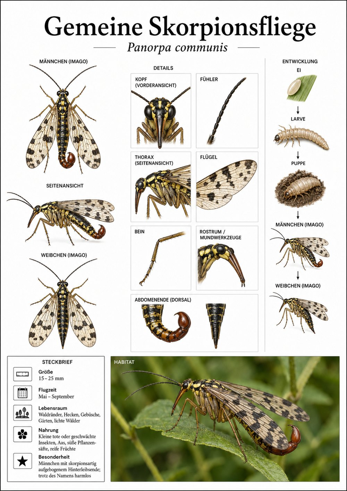
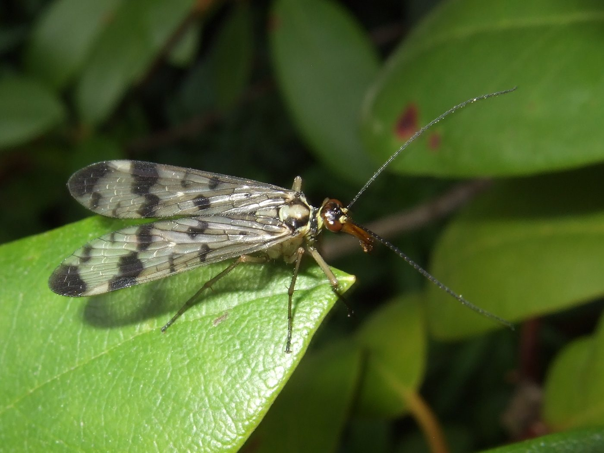

Insekten › Schnabelfliegen › Skorpionsfliegen

Panorpa communis

Foto: Michael Baur
Der Name macht Eindruck, die Sache ist harmlos: Das Männchen trägt am Hinterleibsende ein verdicktes, nach oben gebogenes Greiforgan, das an den Stachel eines Skorpions erinnert. Es ist aber nur sein Geschlechtsapparat – stechen kann die Skorpionsfliege nicht.
Der Kopf ist zu einem langen „Schnabel“ verlängert, an dessen Ende winzige Kauwerkzeuge sitzen. Damit frisst sie tote Insekten – und stiehlt sogar gefangene Beute aus Spinnennetzen, ohne selbst hängen zu bleiben. Eine der wenigen Schnabelfliegen, die man im Garten findet.
Naturkundliche Tafel im Stil klassischer Lehrtafeln (teils KI-gestützt erstellt) · Foto: Michael Baur (CC BY-NC). Der Steckbrief steht auf der Tafel; der Text wurde für Fauna Mibaso verfasst. Schwerpunkt: Verhalten, Ökologie und Kuriositäten.